发现 AI 代码驱动的动效、视频与交互作品。
1,315 个作品 · 7 个创作方向 · 追溯原作者、源码与制作资料。
Curated AI-coded motion, video and interactive art, with original sources and creative resources.
画面来自原作者作品 · 查看画面来源
· 查看源码 ↗


面向设计师与 AI 的设计风格库。
15 秒动效短片、风格图、设计规则、AI 提示词与完整源码。
Design references for humans and AI, with motion shorts, visual guides, prompts and source code.
· 查看源码 ↗

有出处的中文 X / Twitter 运营、涨粉与变现资料库。
94 篇创作者经验 · 原创导读与有限摘录 · 直达作者原文。
94 sourced creator write-ups, with reading guides, limited excerpts and links to the original posts.
· 查看源码 ↗